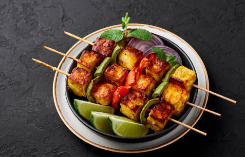

Let's learn making Paneer Tikka

Paneer Tikka is a popular Indian dish made with cubes of paneer (cottage cheese) marinated in spices and grilled to perfection.
Here are the ingredients you'll need:
- 200g paneer, cut into cubes
- 1 tbsp ginger-garlic paste
- 1 tsp red chili powder
- 1 tsp garam masala
- 1/2 tsp turmeric powder
- Salt to taste
- 2 tbsp yogurt
- 2 tbsp oil
Instructions:
- In a bowl, mix ginger-garlic paste, red chili powder, garam masala, turmeric powder, salt, yogurt, and oil to make the marinade.
- Add the paneer cubes to the marinade and coat them well. Let it marinate for at least 30 minutes.
- Preheat the grill or oven to 200°C (392°F).
- Thread the marinated paneer cubes onto skewers and place them on the grill or in the oven.
- Grill or bake for 15-20 minutes, turning occasionally, until the paneer is cooked and slightly charred.
- Serve hot with mint chutney and lemon wedges.
Enjoy your tasty treat!
Back to Home